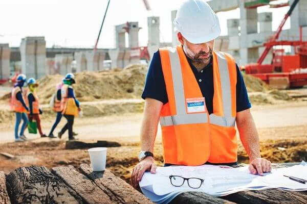
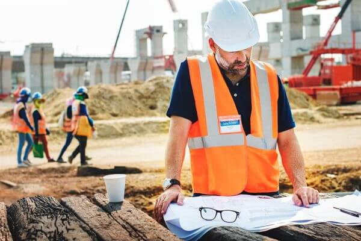

El comienzo de la empresa de contreyMJ
La empresa contreyMJ empezo en del año 2001 en los inicios del mes de Abril y nos enfocamos enfocomos en tomar todos los materiales para teder una buenas cliadad en las contrucciones de hogares o empresas.
Los servicios que ofrecemos
Nuestra empresa se enfoca a dar lo mejor de lo mejor a nuestros clientes:
- 1. Seguridad de los nuevas construcción reparación, alteración, restauración.
- 2. Trabajo de mantenimiento.
- 3. Trabajar en residenciales y obras civiles.

 

Proyectos Realizados
Nuestros proyectos que realizamos y para mejorar su cliadad:
- 1. Restaurantes
- 2. Edificios de oficinas
- 3. Casas


Materiales que manejamos en ContreyMJ
Agloerantes
Son nuestros elementos que sirven para unir, pegar ladrillos o mamposterías en las construcciones, mediante reacciones químicas en presencia de agua y aire
Metálica
Nuestos elementos usados son el acero, el hierro y el aluminio que utilizamos en en la construcción de edificios, puentes, torres de energía y otros proyectos de ingeniería civil.
Orgánicos
Estos son para generar edificios de bajo costo y gran seguridad ante los daños por erosión con el paso del tiempo.
"Maravilloso servicio, con seguridad, buenos materiales y duración al mantenimiento"
- Celeste Gonzáles, Cliente satisfecho